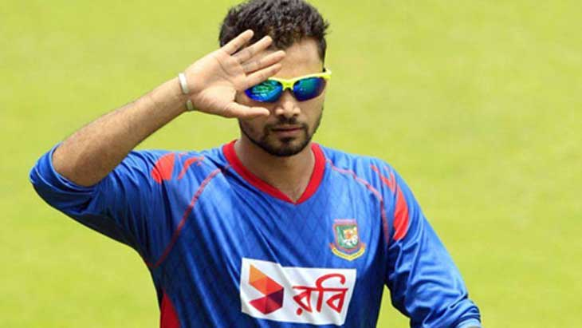

Profile
Popularly known as the 'Narail Express', Mortaza's career has been beset by injuries. The first real quick bowler to come out of Bangladesh, he was earmarked for great things since the time he made his test debut against Zimbabwe in 2001-02. Stockily built, he could generate uncomfortable bounce with his strong action.

He impressed Andy Roberts who was then coaching Bangladesh and was drafted into the Test side - in what was his debut first-class game as well - he was the 31st person to have achieved this, and the third since 1899. After his Test debut, injuries started wreaking havoc and he found himself making one comeback after the other. Injuries to his back and knee forced him to miss most of the action, but came back and broke Aftab Ahmed's national record, en-route to taking 6/26 against Kenya in an ODI
In the calendar year of 2006, Mortaza was the world's highest wicket taker in ODIs, collecting 49 wickets. The haul was the most ever in a calendar year by a Bangladeshi, and 17th most for anyone. He was the Man of the Match in his side's shock victory over India in the 2007 World Cup taking 4/38. Unsurprisingly he played in all of Bangladesh's matches in the World Cup as they reached the second round.
A capable lower order batsman, who can use the long handle to good effect, Mortaza was picked up by the KKR side $600,000 in February 2009. He had a shock debut with them when he conceded 26 runs in the last over to Rohit Sharma when 21 was required who snatched an almost impossible win. That was the only game he played in the season as the franchisee consigned him to the benches.
Mortaza was appointed captain after the T20 World Cup in the Caribbean. He was to debut as captain when Bangladesh toured West Indies and Zimbabwe, but an ankle injury forced him to hand over the captaincy duties to Shakib. He suffered a tear in his knee ligament which forced him to miss the 2011 World Cup. He hoped to recover in time, and when it was announced that Mortaza had not been included in the World Cup squad there was rioting in Bangladesh and in one place a half-day strike.
The Bangladesh Cricket Board started the Bangladesh Premier League in 2012, a Twenty20 tournament to be held in February 2012. In the player auction Mortaza was snapped up by the Dhaka Gladiators for 45,000 USD. On his return to competitive cricket, Mortaza was made the captain of Dhaka Gladiators. Before the tournament had started, he reported to have been approached with a request to participate in spot-fixing. Mortaza led his team Dhaka Gladiators to the title in the inaugural edition of BPL, where he took ten wickets from eleven matches.
Shortly after BPL concluded, Bangladesh hosted the 2012 Asia Cup. After losing to Pakistan the previous December, five new players were called into Bangladesh's 15-man squad, including Mortaza who was making his comeback to the national side after an injury. When the BCB announced its central contracts for 2012 in March, Mortaza retained his top level contract. Bangladesh exceeded all expectations and progressed to the final against Pakistan, it was just the second time that Bangladesh had reached the final of a tournament. Though he had played in the BPL, bowling ten overs in the ODIs proved to be a challenge for Mortaza. He struggled to bowl his quota of 10 overs, but finished as Bangladesh's leading seamer with six wickets from four matches. Even after being in and out of the squad Mortaza was able to retain his top level central contract with BCB in March 2012.
Mortaza has been seen as a short form bowler. He has not played a Test match since 2009 and he injured himself again while playing the 2014 T20 World Cup. In the match against Pakistan, he equalled the record for the most runs conceded by a Bangladeshi bowler in T20Is. He was the third highest wicket taker in the Nov-Dec 2014 series against Zimbabwe. He was appointed as skipper for the series after the captaincy was split across formats for the first time. The BCB, being happy with his ODI captaincy, asked him to lead the team in the 2015 World Cup as well, where he did a tremendous job leading Bangladesh to the quarterfinal (the first time Bangladesh had made it to the knockouts).
After the 2015 World Cup, Mashrafe led his team to ODI series wins against Pakistan (3-0) and India (2-1) at home. These results sealed a place for Bangladesh in the 8-nation tournament, the 2017 edition of the Champions Trophy in England. Mashrafe, who had a few thoughts of retirement put them all to rest and wanted to work harder for the tourney.. After registering an ODI series win against the Proteas, the Bangladesh captain said, 'We used to dream of beating big teams. Now we are beating them.'
After finishing runners-up in the Asia Cup, Mashrafe’s next assignment was the WT20 held in India. A different Mortaza was seen midway during the tournament. In one of the press conferences, he was seen shedding tears when asked about the suspensions of Taskin Ahmed and Arafat Sunny for illegal bowling actions. The Bangladesh certainly missed their services and failed to register a single win in the Super 10 stage.
After squaring the ODI series in Sri Lanka, Mortaza announced his retirement from the shortest format of the game at the toss during the first of the two T20Is. His teammates gave him a fitting farewell by winning his final T20I game and thereby leveling the series 1-1
On beating New Zealand in the final game of the tri-series in Ireland in May 2017, Bangladesh went above Sri Lanka in the rankings to sixth place. Taking confidence from the heartening show in the Ireland tri-series, Bangladesh beat New Zealand once again in the 2017 Champions Trophy as they reached the semi-final for the first time in the history of the tournament. They were eventually beaten by India but returned home to a rousing welcome.
After a slow start, Bangladesh have started to emerge as a dominant force - at least in the shorter formats of the game and much of the credit must go to the man who's leading his team towards glory.